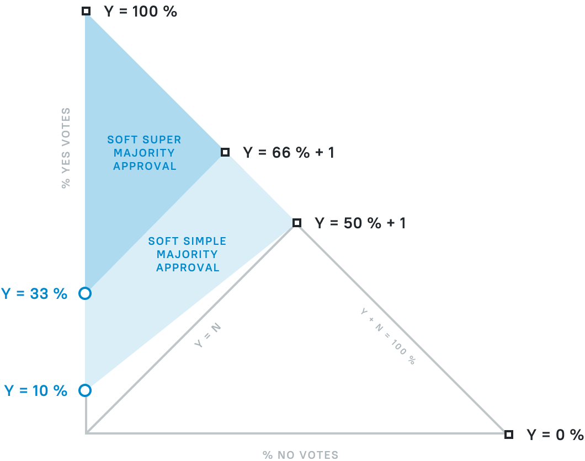

Organizations: GOSH DAO and SMV
DAO
As a blockchain-based product, GOSH is all about decentralization.
The primary entity on GOSH is a Decentralized Autonomous Organization - DAO.
At a minimum, organizations have one member, who signle-handedly creates and manages repositories.
Once more than one user is added to an Organization, however, decentralized management of repositories begins.
DAO can be configured to require a vote of members for any action within the repository.
For example, a user may propose a commit to DAO, and a soft-majority vote of all other DAO members may be required to approve it.
Repositories could be Locked to resuire any changes to them to be voted by DAO SMV.
DAO configuration is very flexible. Voting requirements may be set (or not) for any action, from adding new members to DAO to merging a commit.
Soft Majority Voting
Soft Majority Voting, or SMV for short, is a voting mechanism designed for transparency and optional participation.
The outcome of SMV depends on the difference between the number of votes for and against a proposal, with a minimal threshold of approving votes required to pass a proposal no one objects to.
If everyone votes either for or against a proposal, 50% + 1 vote is required for the proposal to pass.
If the only votes given are for the proposal, and no one votes against, 10% approving votes are enough for the proposal to pass.
Everything in between these two extremes is a linear dependency between the percentage of votes against and percentage of votes for required to pass the proposal.
For important decisions a more strict super majority approval criteria may be set up.

All SMV proposals have a set deadline. When it is reached, accumulated votes are counted, the decision is made, and the proposal completes.
If however a majority of 50% + 1 vote is achieved early, the proposal completes immediately.
SMV in GOSH
In GOSH one vote is one token on the user's GOSH wallet. Each user gets 100 tokens by default. The total supply of tokens in the repository is the sum of all tokens of all its participants.
This way, for a proposal in GOSH to pass early several participants need to vote for it with 50% of the total token supply of the repository + 1 token.
If no one objects to a proposal for the duration of its voting period, 10% of the total supply of tokens is enough, but the proposal will only complete at the end of the voting period.
If votes are split, and neither side achieves 50% + 1 token early, the proposal completes at the end of the voting period and the result is calculated according to the diagram above.